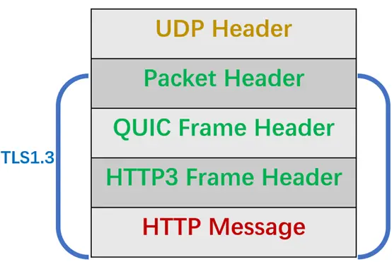
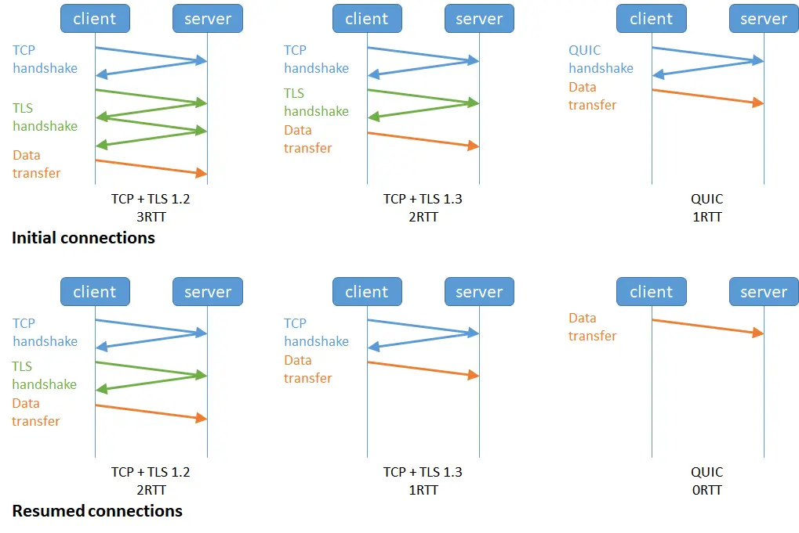

基于UDP实现可靠传输
一、问题
基于UDP如何实现可靠传输呢？
会想到TCP可靠的特性：序列号、确认应答、流量控制、拥塞控制，在应用层实现一遍，但是如果这么实现跟TCP有何区别呢？既然TCP天然支持可靠传输，为什么还需要基于UDP实现可靠传输呢？
所以要先清除TCP协议的痛点，这些痛点是否可以基于UDP协议实现的可靠传输协议中得到改进呢？
二、QUIC如何实现可靠传输
要基于UDP实现的可靠传输协议，那么就要在应用层下功夫，也及是要设计好协议的头字段。
比如HTTP/3，在UDP报文头部与HTTP消息之间共有3层头部：

整体看的视角是这样的：
Packet Header
Packet Header首次建立连接时和日常传输数据时使用的Header是不同的，如下图所示（只包含了部分Header）：

Packet Header细分有两种：
Long Packet Header：用于首次建立连接。
Short Packet Header：用于日常传输数据。
QUIC也是需要三次握手建立连接的，主要的目的是为了协商连接ID，协商出连接ID后，后续传输时，双方只需要固定住连接ID，从而实现连接迁移功能，随意，可以看到日常传输数据Short Packet Header不需要再传输Source Connection ID字段了，只需要传输Destination Connection ID。
Short Packet Header中的Packet Number是每个报文独一无二的编号，它是严格递增的，也就是说就算PacketN丢失了，重传的Packet N的Packet Number已经不是N，而是一个比N大的值。
为什么要这么设计呢？
我们先来看下TCP的问题，TCP在重传报文的时候序列号和原始报文的序列号是一样的，也正是由于这个特性，引入了TCP重传的歧义问题。
比如上图，当TCP发生超时重传后，客户端发起重传，然后接收到了服务端的确认ACK，由于客户端原始报文和重传报文序列号是一样的，那么服务端针对这链各个报文回复都是相同的ACK。
这样的话，客户端就无法判断出使原始报文的响应还是重传报文的响应，这样在计算RTT（往返时间）时候应该选择原始报文开始计算，花式重传原始报文开始计算呢？
如果算成原始请求的响应，但实际上是重传请求的响应（上图左）会导致采样RTT变大。
如果算成重传请求的响应，但实际上是原始请求的响应（上图右）很容易导致采用RTT小。
RTO（超时时间）是基于RTT来计算的，那么如果RTT计算不精确，那么RTO（超时时间）也不会精确，这样可能导致重传的概率事件增大。
QUIC报文中的Packet Number是严格递增的，即使是重传报文，它的PacketNumber也是递增的，这样就能更加精确计算出报文的RTT。
如果ACK的Packet Number是N+M，就会根据重传报文计算采样RTT。如果ACK的Packet Number是N，就根据原始报文的时间计算采样RTT，没有歧义性的问题。
另外，还有一个好处，QUIC使用的Packt Number是单调递增的设计，可以让数据包不在向TCP那样必须有序的确认，QUIC支持乱序确认，当数据包PacketN丢失后，只要有新的已接收数据包确认，当前窗口就会继续往右滑动。
待发送段获取包Packet N丢失之后，会将需要重传的书包放到待发送队里额，重新编号比如数据包N+M后重新发送给接收端，对于重传的数据报处理发送新的数据报类似，这样就不会因为丢包重传将当前窗口给阻塞在原地。
所以Packet Number简单递增有两个好处：
可以更加精确计算RTT，没有TCP重传的歧义性的问题。
可以支持乱序确认，因为丢包重传将当前窗口阻塞在原地，而TCP必须是顺序确认的，丢包时导致窗口不滑动。

QUIC Frame Header
一个Packet报文中可以存放多个QUIC Frame。

每一个Frame都有明确的类型，针对不同的类型，功能是不同的，格式也不同。
这里就说明下Stream类型的Frame格式，Stream可以认为就是一条HTTP请求，如下图所示：
Stream ID作用：多个并发传输的HTTP消息，通过不同的Stream ID加以区别，类似HTTP2的STreamId
Offset作用：类似TCP协议中的Seq序号，保证数据的顺序性和可靠性。
Length作用：指明了Frame数据的长度。
在前面介绍了Packet Header时候，说明到PacketNumber是严格递增的，即使重传报文的Packet Number也是递增的，既然重传数据的Packet N+M与丢失数据包的N编号不一致，我们则呢么确定数据包的内容是一样的呢？
所以引入了Freame Header这一层，通过Stream ID + Offset字段信息实现了数据的有序性，通过比较两个数据包的Stream ID和Stream Offset，如果都是一致的，就说明两个数据包是一致的。
举例子说明，如下图所示，数据包的Packet N丢失了，后面重传了该数据包的编号位Packet N +2，丢失的数据包和重传的数据包Stream Id与Offset都一致，说明这2个数据包的内容一致，这些数据包传输到接收端后，接收端根据StreamID与Offset字段信息将Stream X 和Stream X+Y按照顺序组织起来，然后交给应用程序来处理。

总的来说，QUIC通过单项递增的Packet Number，配合Strean ID 与 Offset字段信息，可以支持乱序确认而不影响数据包正确组装，摆脱了TCP必须确认应答ACK的限制，解决了TCP因为某个数据报重传而阻塞后续的有待发数据包的问题。
三、QUIC如何解决TCP对头阻塞的问题
TCP对头阻塞问题
TCP丢头阻塞的问题其实就是接收窗口的对头阻塞问题。
接收方收到数据范围必须在接收窗口范围内，如果收到超过接收窗口范围的数据，就会丢弃数据，比如下图接收窗口的范围是32~51字节，如果收到第52字节以上数据都会被丢弃 。

接收窗口什么时候才能滑动？当接收窗口收到的数据时，接收窗口才能往前滑动，然后已经接收并且确认有序的数据就可以被应用层读取。
但是，当接收窗口收到的数据不是有序的，比如收到第33~40字节的数据，由于第32字节数据没有收到，接收窗口无法向前滑动，那么即使先收到第33~40字节的数据，这些数据也无法被应用层读取的，只有当发送方重传了第32字节数据并且被接收方收到后，接收窗口才会往前滑动，然后应用层才能从内核读取第32~40字节的数据。
导致接收窗口的对头阻塞问题，是因为TCP必须按需处理数据，也就是TCP层为了保证数据的有序性，只有在处理完有序的数据后，滑动窗口才能往前滑动，否则就停留，停留（接收窗口）会使得应用层无法读取的数据。
其实也不能怪TCP协议，本来设计厎就是为了保证数据的有序性。
HTTP/2的对头阻塞
HTTP/2通过抽象出Stream的概念，实现了HTTP并发传输，一个Stream就代表HTTP/1.1里的请求和响应。

在HTTP/2连接上，不同Stream的帧是可以乱序发送（因此可以并发不同的Stream），因为每个帧的头部会携带Stream ID信息，所以接收端可以通过StreamID有序组装成HTTP消息，而同一Stream内部的帧必须是严格有序的。
但是HTTP/2多个Stream请求都是一条TCP连接上传输，这意味着多个Stream共用一个TCP滑动窗口，那么当数据丢失，滑动窗口是无法往前移动的，此时就会阻塞主所有的HTTP请求，者属于TCP层对头阻塞。

没有对头阻塞的QUIC
QUIC也借鉴HTTP/2里的Stream概念，在一条QUIC连接上可以并发发送多个HTTP请求（Stream）。
但是QUIC给每个Stream都分配了一个独立的滑动窗口，这样使得一个连接上的多个Stream之间没有依赖关系，都是相互独立的，各自控制的滑动窗口。
假如Stream2丢了一个UDP包，也只会影响Stream2的处理，不会影响其他的Stream，与HTTP/2不同，HTTP/2只要某个流程中的数据报丢失了，其他流也会因此受影响。

QUIC是如何做流量控制的
TCP流量控制是通过让接收方告诉发送方，它（接收方）的接收窗口有多大，从而让发送方根据接收方的实际接收能力控制发送的数据量。
QUIC实现流量控制的方式：
通过window_update帧告诉对端自己可以接受的字节数，这样发送方就不会发送超过这个数量的数据。
通过BlockFrame告诉对端由于流量控制被阻塞了，就无法发送数据。
在前面说到，TCP的接收窗口在收到有序的数据后，接收窗口往前滑动，否则停止滑动。QUIC是基于UDP传输的，而UDP没有流量控制，因此QUIC实现了自己的流量控制机制，QUIC的滑动窗口滑动的条件跟TCP有一点差别，但是同一个STream的数据也要保证顺序的，不然无法实现可靠传输，因此同一个Stream数据包丢失了，也会造成窗口无法滑动。
QUIC的每个Stream都有各自的滑动窗口，不同Stream互相独立，对头的StreamA被阻塞后，不妨碍StreamB、C的读取。 对应HTTP/2来说，所有的STream都泡在一条TCP连接上，而这些Stream共享一个滑动窗口，因此同一个Connection内，StreamA被阻塞后，StreamB、C必须等待。
QUIC实现了两种级别的流量控制，分别为Stream和Connection两种级别：
Stream级别的流量控制：Stream可以认为也就是一条HTTP请求，每个Stream都有独立的滑动窗口，所以每个Stream都可以做流量控制，防止单个Stream消耗连（Connection）的全部接收缓冲。
Connection流量控制：限制连接中所有Stream相加起来的总字节数，防止发送方超过连接的缓冲容量。
Stream级别的流量控制
最开始，接收方的窗口初始化状态如下：

接着，接收方收到了发送方发送过来的数据，有的数据被上层读取了，有的数据报丢包了，此时的接收窗口状态如下：
可以看到，接收窗口的左边界取决于接收到的最大偏移字节数，此时的 接收窗口 = 最大窗口数 - 接收到的最大偏移数。
这里就可以看出QUIC的流量控制和TCP有点区别了：
TCP的接收窗口只有前面所有的Segment都接收的情况下才会移动左边界，当在前面还有字节未接受但收到后面的字节的情况下，窗口也不会移动。
QUIC的接收窗口的左边界滑动条件取决于接收的最大偏移字节数。
那接收窗口右边触发的滑动条件是什么呢？看下图：

当图中的绿色部分超过最大接收窗口的一半后，最大接收窗口向右移动，接收窗口的有边界也向右扩展，同时给对端发送窗口更新帧，当发送方收到的接收方的窗口更新帧后，发送窗口的有边界也会往右扩展，一次达到窗口滑动的效果。
绿色部分的数据是已经收到的顺序的数据，如果中途丢失了数据报，导致绿色部分的数据没有超过最大接收窗口的一半，那就收窗口就无法滑动了，这个只影响同一个Stream，其他Stream是不会影响的，因为每个Stream都有各自的滑动窗口。
在前面我们说过QUIC支持乱序确认，具体怎么做到的呢？
接下来，举个例子，如下图所示，当前发送方的缓冲区的大小为8，发送方按照QUIC按序（offset顺序）发送29-36的数据包：
31、32、34数据包先到达，基于offset被优选乱序确认，但30数据包没有确认，所以当前已提交的字节偏移量不变，发送方的缓存区不变。
30到达并确认，发送方的缓存区收缩到阈值，接收方发送MAX_STREAM_DATA_Freme（协商缓存大小的特定帧）给发送方，请求增大最大绝对字节偏移量。
协商完毕后最大绝对字节偏移量右移动，发送方的缓存区变大，同时发送方发现数据包33超时。
发送方超过数据包重新编号为42，继续发送：
以上就是最基本的数据报发送-接收过程，控制数据发送的唯一限制就是最大绝对字节偏移量，该只就是接收方基于当前已经提交的偏移量（连续已确认并向上层应用提交的苏举报offset）和发送方协商得出的。
Connection流量控制
对于Connection级别的流量窗口，其接受窗口的大小就是各个Stream接收窗口大小之和。
上图中的例子，所有Streams的最大窗口数是120，其中：
Stream1最大接收偏移为100，可用窗口 = 120 - 100 = 20。
Stream2最大接收偏移为90， 可用窗口 = 120 - 90 = 30。
Stream3最大接收偏移为110。可用窗口 = 120 - 110 = 10。
那么整个Connection的可用窗口 = 10 + 30 + 10 = 60。
可用窗口 = Stream1可用窗口 + Stream2可用窗口 + Stream3可用窗口 。
QUIC对拥塞控制改进
QUIC协议当默认使用了TCP的Cubic拥塞控制算法（我们熟知慢开始、拥塞避免、块重传、快速回复策略）同时也支持CubicBytes、Reno、RenoBytes、BBR、PCCD等拥塞控制算法，相当于将TCP拥塞控制算法照搬过来了。
QUIC是如何改进TCP的拥塞控制算法的呢？
QUIC是出于应用层的，应用程序层面就能实现不同的拥塞控制算法，不需要操作系统，不需要内核支持。这是一个飞跃，因为传统的TCP拥塞控制，必须要端到端的网络协议支持，才能实现控制效果。而内核和操作系统部署成本非常高，升级周期很长，所以TCP拥塞控制算法迭代速度很慢。而QUIC可以随浏览器更新，QUIC的拥塞控制算法就可以有较快的迭代速度。
TCP更改拥塞控制算法是对系统中所有的应用都生效，无法根据不同应用设定不同的拥塞控制策略。但是因为QUIC出于应用层，所以就可以针对不同的应用设置不同的拥塞控制算法，这样灵活性就比较高了。
QUIC更快的连接建立
对于HTTP/1和HTTP/2协议，TCP和TLS是分层的，分别属于内核实现的传输层、openssl库的实现的表示层，因此他们难以合并在一起，需要分批次来握手，先TCP握手（1RTT），再TLS握手（2RTT），所以需要3RTT的延迟才能传输数据，就算Session会话复用，也需要至少2个RTT。
HTTP/3在传输数据虽然需要QUIC协议握手，这个握手过程只需要1RTT，握手的目的是为了确认双方的连接id，连接迁移时基于连接id实现的。
但是HTTP/3的QUIC协议并不是TLS分层的，而是QUIC包含了TLS，它在自己的帧会携带TLS里的记录，再加上QUIC使用的是TLS1.3因此进需要1个RTT就可以完成建立连接与秘钥协商，甚至在第二次连接的时候，应用数据包可以和QUIC握手信息（连接信息+ TLS信息）一起发送，达到0-RTT的效果。
如下图右边，HTTP/3会话恢复的时候，有效负载数据域第一个数据包一起发送，可以做到0-RTT（下图右边）：

QUIC是如何迁移连接的？
基于TCP传输协议的HTTP协议，由于是通过四元组去而定一条TCP连接的。
那么当移动设备的网络从4G切换到Wifi的时候，意味着IP地址也发生了变化，。那额就必须要要断开连接，然后重新建立TCP连接。
而建立连接的过程包含TCP三次握手和TLS四次握手的时延，以及TCP慢启动的减速过程，给用户的柑橘就是网络突然卡顿了一下，因此连接的迁移成本是很高的。
QUIC协议没有用四元组的方式来绑定连接，而是通过连接ID来标记通信的两个端点，客户端和服务器都可以各自选择一组ID来标记自己，因此及时移动设备的网络变化后，导致IP地址变化了，只有扔保持有上下文信息（比如链接ID、TLS秘钥等），就可以无缝的复用原连接，消除重链的成本，没有丝毫卡顿，达到了连接迁移的功能。